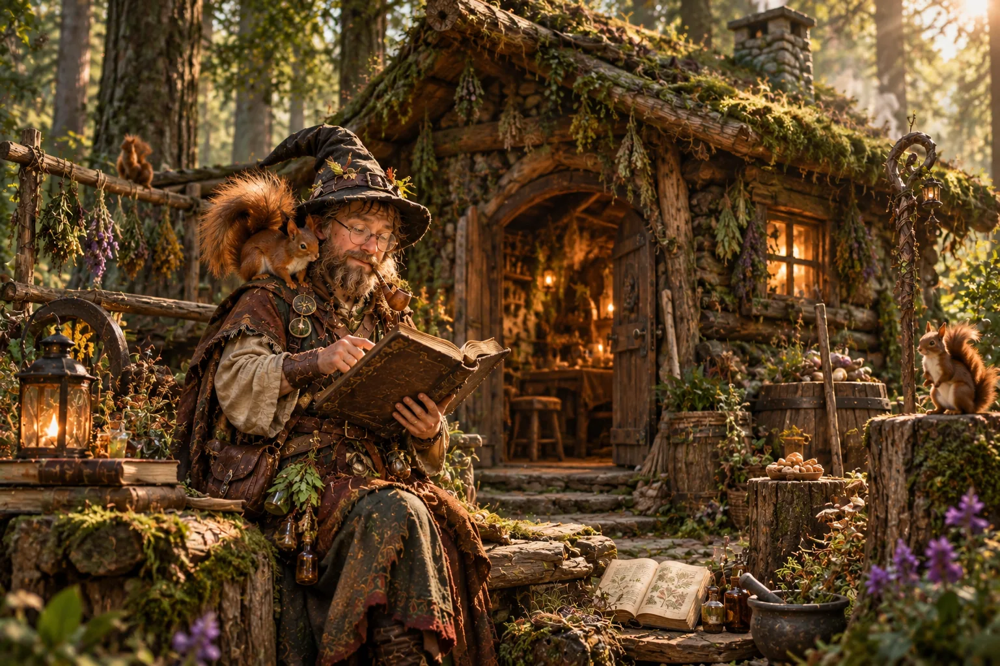

PROLOG
Eine Hütte unter alten Bäumen
Wo unsere Geschichte beginnt.
Von einer verborgenen Waldhütte bis zu den ersten Abenteuern in den Vergessenen Reichen. Festgehalten in den Aufzeichnungen der Gefährten.
„Manche Abenteuer beginnen mit einer Prophezeiung. Andere mit einer schlechten Entscheidung, einem ungewöhnlichen Eichhörnchen und einer Taverne.“
Jede Reise hinterlässt Spuren. Hier wachsen sie Kapitel für Kapitel zu einer Geschichte zusammen.

Wo unsere Geschichte beginnt.
Vier sehr unterschiedliche Gestalten. Eine gemeinsame Reise. Und mindestens ein fragwürdiger Plan.
Wann und wo sich das Schicksal der Reisenden entfaltet.
Die Datumsangaben werden nach den tatsächlichen Spielrunden eingetragen. Hier werden keine fiktiven Sessiondaten als Tatsachen ausgegeben.
Nach jeder Runde wird diese Chronik um neue Begegnungen, Orte, Entscheidungen und Bilder erweitert.
Zurück zum Anfang ↑